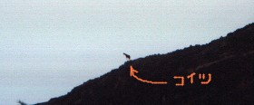
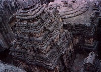
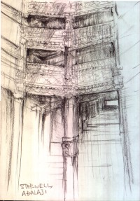

|
#何かエローラの寺院の上に一人で立つ一匹狼じゃなくて一匹山羊を見かけて大ハシャギしてました「ヤツ、ぜってーここのヌシだぜー」とか言っていて。 |
 |
|
 |
ま、ヌシはともかくとしてインドの主目的だったエローラ石窟寺院。ヤバイですスゴイです。 予備知識として「岩壁をくりぬいて造られた」ってのは知ってたんですけど、その規模が半端じゃないです。 だってこんなバカでかい建造物をノミとかで岩を削り出して造ったって....馬鹿じゃねーのインド人とか思うくらいで。なんかもうその質量に圧倒されました。 |

#バスの途中下車の場所がわからなかったんで、隣のインド人に「ADALA-VAVに着いたら教えてくれ！」とか頼んでついてみた場所は、幹線道路沿いの小さなマーケットでした。